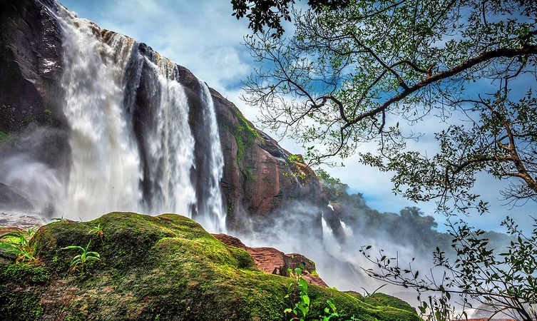

1.Athirappally
location
On the outskirts of the city at a distance of some 60 km, the Athirappilly waterfalls mark one of the best places to visit in Thrissur. Standing 80 ft tall and about 330 ft wide, these falls are the largest in the state of Kerala. The majesty of this place can be understood by the fact that the falls are located on the Chalakudy River, that originates from the highest mountain in India outside of the Himalayas. A perfect place for a group outing, these falls are sometimes called the Niagra of India
2.Kerala kalamandalam
location

A University of Art and Culture, Kerala Kalamandir is a Government of India recognized institution dedicated to providing learning in the many performing arts native to India. Their main focus has always been on the arts that have been developed in Southern India. The Kerala Kalamandalam was what gave three main arts of Kerala a new life, namely Kathakali, Kudiyattam, and Mohiniyattam. For the sake of performing arts, and if you are someone who is a fanatic for them, this is definitely the place to be. The best part is that the institute is housed on the banks of the Bharathapuzha River.
3.Chavakkad beach
location

One of the most fascinating and unexplored beaches of the state of Kerala, the Chavakkad Beach is popularly one amongst the most famous Thrissur Tourist places. Perfect for picnickers, honeymooners, and tourists of all sorts, the golden sand of the beach is what at the tracts people from all corners of the country. The place where the beach is, there is a river that meets the sea, making an estuary. One of the best reasons for people to flock here is the colour of the waters, and the sight of fishermen going about their daily life. One can do a lot here, one of which is witnessing the amazing cleanliness of the area.